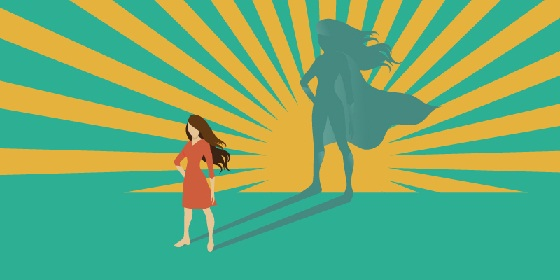

by Pallavi Purohit
The topic on “Women Empowerment” is a burning issue all over the world. “Women empowerment” and “women equality with men” is a universal issue.
What is the meaning of Women Empowerment?
Women Empowerment refers to increasing and improving the social, economic, political and legal strength of the women, to ensure equal-right to women, and to make them confident enough to claim their rights, such as:
• freely live their life with a sense of self-worth, respect and dignity,
• have complete control of their life, both within and outside of their home and workplace,
• to make their own choices and decisions,
• have equal rights to participate in social, religious and public activities,
• have equal social status in the society,
• have equal rights for social and economic justice,
• determine financial and economic choices,
• get equal opportunity for education,
• get equal employment opportunity without any gender bias,
• get safe and comfortable working environment,

Why Women Empowerment is Important?
Under-employed and unemployed:Women population constitutes around 50% of the world population. A large number of women around the world are unemployed. The world economy suffers a lot because of the unequal opportunity for women at workplaces.
Talented:Women are as talented as men. Previously, women were not allowed higher education like men and hence their talents were wasted. But nowadays, they are also allowed to go for higher studies and it encourages women to show their talents which will not only benefit her individually but to the whole world at large.
Overall development of society: The main advantage of Women Empowerment is that there will be an overall development of the society. The money that women earn does not only help them and or their family, but it also help develop the society.
Economic Benefits: Women Empowerment also leads to more economic benefits not to the individuals but to the society as well. Unlike earlier days when they stayed at home only and do only kitchen stuffs, nowadays, they roam outside and also earns money like the male members of the society. Women empowerment helps women to stand on their own legs, become independent and also to earn for their family which grows country’s economy.
Reduction in domestic violence: Women Empowerment leads to decrease in domestic violence. Uneducated women are at higher risk for domestic violence than an educated woman. know their rights and duties and hence can stop corruption.
Reduce Poverty: Women Empowerment also reduces poverty. Sometimes, the money earned by the male member of the family is not sufficient to meet the demands of the family. The added earnings of women help the family to come out of poverty trap.
National Development: Women are increasingly participating in the national development process. They are making the nation proud by their outstanding performances almost every spheres including medical science, social service, engineering, etc.